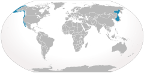

La Ballena Gris
Eschrichtius robustus
La ballena gris es una ballena a la que la gente parece ser capaz de identificar cuando es avistada en el océano. Estas ballenas tienen algunas características que los hacen familiares de varias maneras. Pueden llegar a medir más de 50 pies de largo y pesar más de 36 toneladas. Se dará cuenta de los bigotes en la boca, los cuales están en su lugar para ayudarles a sentir lo que está sucediendo a su alrededor.
En general, la ballena gris vive en pequeños grupos, de 3 a 5 miembros, la mayor vaina encontrada tenía 16 miembros. Sin embargo, no se quedan en el mismo grupo durante toda su vida. En su lugar, forman lazos muy flojos, y pasan a otros grupos más adelante.
Las ballenas grises son vistas, a menudo, surcando las aguas a velocidades increíbles. Los investigadores creen que este proceso las ayuda a eliminar los parásitos de su cuerpo. También participan en un tipo de comportamiento en el que sólo levantan la cabeza fuera del agua, arquean su cabeza hacia atrás como si estuvieran tomando el sol, o como si sintiesen curiosidad por conocer algo.
Distribución:
Existen dos poblaciones del océano Pacífico:
Una población pequeña que viaja entre el mar de Ojotsk y Corea meridional.
Otra más grande que viaja entre las aguas de Alaska y la Baja California Sur.
Descripción:
La hembra es ligeramente más grande que el macho. Un macho adulto tiene una longitud de 13 a 15 metros y pesa entre 15 a 33 toneladas, aunque algunos ejemplares alcanzan las 40 toneladas.
Presentan una cola de gran tamaño, ya que de ancho tiene una medida de hasta 3.6 metros.
La piel es gruesa y está revestida de organismos marinos como rémoras, algas percebes y de otros parásitos. Son de color gris con manchas blancas distribuidas en su cuerpo que hacen que cada especie sea única. No cuentan con aleta dorsal.
Las barbas tienen menos de 50 cm de largo y de un tono amarillento a blancas con cerdas blanco-amarillentas.
Hábitat:
Se pueden encontrar Ballenas Grises en aguas costeras poco profundas al Oeste del Pacífico Norte. Las Ballenas Grises son las que cuentan con las migraciones más largas con un promedio de 10.000 a 14.000 millas cubiertas de ida y vuelta.
La mayoría de las Ballenas Grises salen en noviembre y diciembre del Mar de Bering en el Pacifico Norte, y viajan hacia el Sur a lo largo de la costa hacia aguas cálidas de Baja California y del Golfo de California.
Alimentación:
Se alimenta en aguas poco profundas sobre fondos lechosos de algas marinas o fondos arenosos. Llena el interior de su gran mandíbula con una enorme cantidad de agua y organismos. Las barbas se encargan de filtrar y sacar el líquido, mientras que al mismo tiempo retiene lo necesario para su alimentación, como:
larvas, camarones, crustáceos, huevos y gusanos marinos. Diariamente la ballena gris consume hasta 1,180 kg de comida
Los ballenatos dependen de una dieta de leche por lo menos durante seis meses
Reproducción:
Alcanzan su madurez sexual a los ocho o nueve años.
La hembra da a luz una sola vez cada dos años
Número de Crías: Generalmente es solo una.
Período de gestación: De 13 meses.
Las ballenas preñadas se congregan en lagunas y bahías de aguas someras y protegidas donde, nacen los ballenatos que miden de 4 a 4.5 m y pesan de 600 a 800 kg.
Longevidad:
Las ballenas grises viven de 30 a 60 años.
Población:
Las ballenas grises usualmente se encuentran en grupos de 3 a 5 individuos.De acuerdo a la Comisión Nacional de Áreas Naturales Protegidas (Conanp), el promedio anual de nacimientos en los santuarios del país es de 618 ballenatos,
que sumados con los 25 mil individuos que hay en el mundo, arrojan una cantidad similar a la que existía hace 170 años.
Existencia de dos poblaciones:
Océano Pacífico:
Una de no más de 130 ejemplares cuya ruta migratoria se sitúa entre el mar de Ojotsk y Corea del Sur.
Pacífico oriental:
Con una población de entre 20.000 y 22.000 individuos que viajan entre las aguas de Alaska y Baja California Sur.
Occidental:
La población occidental está catalogada como en peligro crítico de extinción por la UICN.
No se registraron hembras reproductoras nuevas en 2010, resultando en un mínimo de 26 hembras reproductoras observadas desde 1995.
Incluso un pequeño número de muertes femeninas anuales adicionales tiende a que la subpoblación decline.
Extincion Causas Consecuencias Atrapadas en equipos de pesca
En el pasado, las redes de deriva se usaban en la pesca comercial. Estas redes ligeras atrapaban amplios sectores de bancos de peces, pero también agarraban otro tipo de vida marina que no estaban destinados para la caza, incluidas las ballenas.Aunque las redes fueron prohibidas para su uso fuera de las 200 millas (321 km) de las zonas costeras en la década de 1990, las viejas redes todavía permanecen en el océano; y en algunos países se continúa usándolas a pesar de la prohibición. Cuando las ballenas quedan atrapadas en estas redes, por lo general se ahogan. Contaminación
El envenenamiento de los hábitats marinos también amenaza a la población y la salud de varias especies de ballenas. La contaminación como los residuos tóxicos, derrames de petróleo, basura y productos químicos dañan a las poblaciones de ballenas, ya que los animales ingieren estos materiales.Los desechos sirven como un peligro de asfixia para los animales, mientras que otras veces los elementos dañinos que se encuentran en su entorno los envenenan. Estos materiales también pueden tener un impacto en la cadena alimentaria, limitando o haciendo venenosos los alimentos que consumen las ballenas. Choques con barcos
Dado que el comercio internacional sigue creciendo, cada vez más y más embarcaciones comerciales están entrando en contacto con poblaciones de ballenas..A veces las ballenas colisionan con barcos comerciales y son matadas o heridas por la colisión, por ejemplo, al entrar en contacto con la hélice. El tráfico marítimo también puede perturbar el hábitat de las ballenas a través del ruido que hacen, lo que aleja a las ballenas de las áreas en las que puedan estar alimentándose o apareándose.
Depredadores:
Los seres humanos y orcas atacan principalmente a las crías, de hecho la gran mayoría de cicatrices de las ballenas grises han sido causadas por orcas.
Organizaciones de protección:
-
La Unión Internacional para la Conservación de la Naturaleza y los Recursos Naturales (UICN).
La Fundación Mundial para la Naturaleza, conocido como WWF trabaja por conseguir regulaciones en el comercio de la carne de ballena.
Comisión Ballenera Internacional que establece el reglamento para la caza ballenera.
Ecoturismo Kuyimá ha participado activamente en la protección del hábitat reproductivo de la ballena gris en Laguna San Ignacio.
Reflexión:
Para ayudar con el problema inmediato de la necesidad de aumentar el número de ballenas en peligro de extinción, se están realizando esfuerzos para ayudar a las ballenas en cautiverio con otras formas de reproducción, pero esto no es lo mejor para estos animalitos porque ellos necesitan estar en su hábitat natural. Debemos de hacer conciencia de los actos que estamos cometiendo ya que cada vez que una especie se extingue se crea un desequilibrio total en la cadena alimenticia y se muere poco a poco el planeta.
Datos interesantes:
-
Son especies polígamas, ya que el macho puede aparearse con varias hembras al mismo tiempo sin tener que participar en el cuidado de los ballenatos.
Las primeras ballenas en emprender su migración hacia el sur son las madres preñadas, seguidas por hembras que ovularon recientemente, machos adultos, hembras inmaduras y al final machos inmaduros.
No se quedan en el mismo grupo durante toda su vida.
La ballena gris a veces es perseguida por las orcas.
Hacen una de las migraciones más largas de todos los mamíferos, con un viaje de alrededor de 10,000 millas ida y vuelta
Pueden permanecer sumergidas hasta 15 minutos y desplazarse a un máximo de 10 km/h.